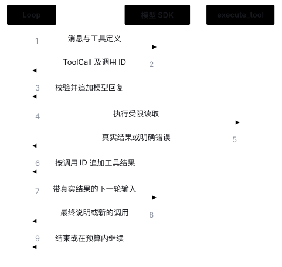
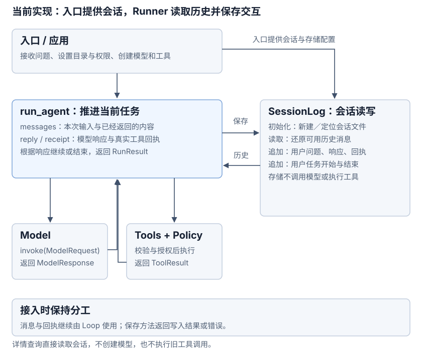
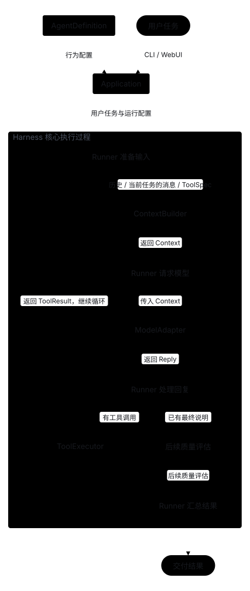

当前最小骨架与未来模块蓝图
本页汇总了项目从单文件最小闭环（阶段 0）到模块化架构（阶段 1–4）的当前真实调用链路，以及完整 Agent Harness 的未来扩展蓝图。
1. 阶段 0：单文件最小 Agent Loop

- 源码位置：
examples/00_plain_loop.py。 - 调用链路：
run_agent直接组装消息与工具定义并调用模型 SDK → 收到工具调用后经execute_tool分发给read_file→ 将真实文件回执追加回消息列表进入下一轮，直到模型直接给出文本回复（详见阶段 0）。
2. 阶段 1–2：模块化 Tools 与 Policy 授权链路
3. 阶段 3：会话记录持久化与多轮历史续接
- 状态流转：每次运行前，
Runner从本地 JSONL 会话存储加载同一会话已完成的历史消息，追加本轮用户问题后进入循环，并将本轮新增的请求、模型响应、工具回执与结束状态按序落盘（详见阶段 3）。

4. 阶段 4：每次请求前选择上下文
run_agent() 在每次 model.invoke() 前调用 select_context()。预算不足时整块省略最旧的可选任务，保护系统指令、必需历史与当前消息。原始 JSONL 不裁剪；仅必需内容超限时记录失败并停止。配置和源码见阶段 4。
5. 完整 Agent Harness 参考蓝图（后续演进方向）
未来演进蓝图（尚未全部实现）：在当前核心骨架之上，阶段 4 已通过 select_context() 实现预算与裁剪；后续可按需接入持久化状态恢复与结果检查器（Checker）。图中多个名为 Runner 的节点表示同一次循环中的不同阶段，无需拆分为独立微服务。

各模块的详细边界与跳转入口见模块职责全景图。